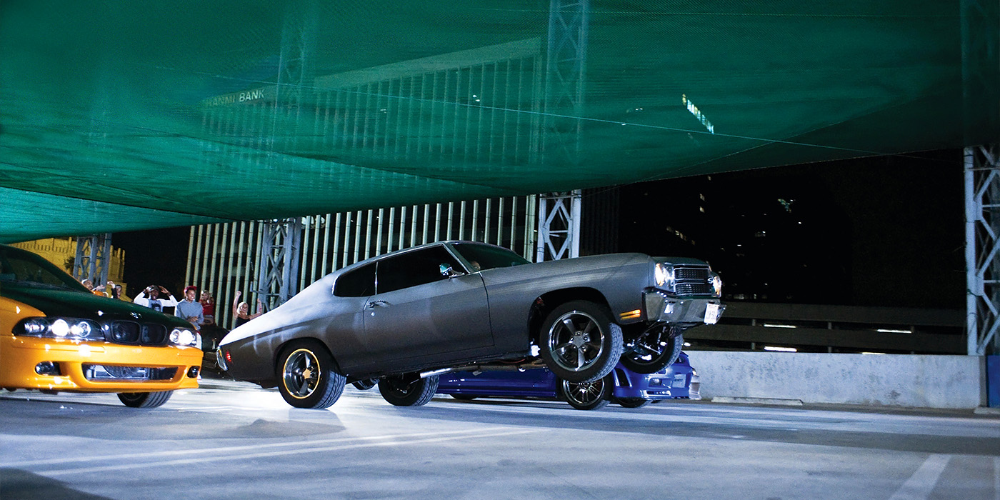

Машины из «Форсажа»: 12 самых интересных моделей
Девятый фильм из знаменитой киносаги «Форсаж» вышел в российский прокат — собрали 12 самых запоминающихся автомобилей из новой картины и всех остальных кинолент.
Прошедшим летом в российский прокат спустя 20 лет после первого фильма вышла девятая часть знаменитой киносаги «Форсаж». Премьера задержалась на целый год из-за пандемии коронавируса.
В новой части фанаты снова могут проследить за хитросплетениями судьбы Доминика Торетто и невероятными автомобильными трюками, которые традиционно сопровождают все фильмы. Autonews.ru выбрал самые интересные машины из блокбастера и вспомнил о ярких автомобилях из предыдущих частей франшизы.
1. Dodge Charger SRT Hellcat
«Форсаж 9», 2021 год
В новом фильме главный герой в исполнении Вина Дизеля не изменяет себе и своего Dodge Charger. Но на этот раз он садится за руль одного из самых мощных седанов — Dodge Charger SRT Hellcat. Под капотом в нем установлен компрессорный двигатель V8 6.2 HEMI Hellcat с отдачей в 717 лошадиных сил. Разгон до 100 км/ч у этой машины занимает 3,7 секунды. Знаменитый маслкар Dodge Charger 1970 года снялся еще в первом «Форсаже». Несмотря на то, что в конце фильма автомобиль был разбит, позже он появился еще в трех сериях знаменитого боевика.
2. Toyota Supra
«Форсаж 9», 2021 год
Девятый «Форсаж» подарит зрителям уже известного злодея по имени Хан, который ранее появлялся в других фильмах киносаги. В части «Токийский дрифт» и «Форсаж 6» герой в исполнении американца Санг Кенга ездил за рулем черно-оранжевой Mazda RX-7 1997 года. В новом фильме Хану также подобрали японский автомобиль — злодей гоняет на Toyota Supra 2020 года также в черно-оранжевых цветах.
3. Реактивный Pontiac Fiero
«Форсаж 9», 2021 год
Если раньше фанаты фильма шутили над тем, что команду Вин Дизеля осталось только отправить в космос, то в новом фильме это действительно произошло. Одной из самых обсуждаемых сцен стал полет двух героев киноленты на реактивном автомобиле в космическое пространство. Для этого эпизода киношники построили специальную машину-самолет на базе Pontiac Fiero с имитацией реактивных двигателей. Гонщики покинули Землю в водолазных костюмах для глубоководных работ, чтобы протаранить своим космолетом вражеский спутник.
4. Mitsubishi Eclipse
«Форсаж», 2001 год
Ярко-зеленый Mitsubishi Eclipse с неоновой подсветкой и спортивным обвесом стал настоящей визитной карточкой «Форсажа». В первой части киноленты сняли четыре таких спорткара с турбированным четырехцилиндровым мотором мощностью 210 лошадиных сил. Кстати, Mitsubishi Eclipse третьего поколения в лавандовом цвете и со странной аэрографией появился также во второй части «Форсажа» и позже был признан одной из самых неудачных машин франшизы.
5. Nissan Skyline R34 GT-R
«Двойной форсаж», 2003 год
Спорткар Nissan Skyline R34 GT-R засветился в «Форсаже» как регулярный участник уличных гонок. Именно на этом полноприводном купе Брайан О'Коннор совершает эффектный прыжок с моста в киноленте 2003 года. В четвертой части спорткар сменят свое амплуа и используется уже для перевозки наркотиков.
6. Ford GT40
«Форсаж 5», 2011 год
Редчайший Ford GT40 снялся в пятой части «Форсажа» в эпизоде с ограблением поезда. Автомобиль выпускался ограниченной серией в 1960-е и становился победителем знаменитой гонки «24 часа Ле-Мана» четыре раза подряд, с 1966 по 1969 год.
7. Aston Martin DB9
«Форсаж 7», 2015 год
Спорткары Aston Martin, которые регулярно попадают в фильмы о Джеймсе Бонде, также засветились в «Форсаже». В седьмой части автомобиль 2004 года принадлежит антигерою в исполнении Джейсона Стейтема. Автомобиль с 6-литровым мотором V12 вдребезги разбили в столкновении с Dodge Charger. Машина стоимостью 184 000 долларов отправилась под списание.
8. Gurkha LAPV
«Форсаж 5», 2011 год
Тактический бронированный автомобиль Gurkha LAPV под управлением Люка Хоббса можно увидеть в пятой серии «Форсажа». Автомобиль массой 8845 кг может перевозить до 12 человек и оснащается турбодизельным мотором V8 объемом 6,7 литра. При желании для борьбы с плохими парнями на крышу броневика можно установить пулеметную турель.
9. Jensen Interceptor
«Форсаж 6», 2013 год
В шестом эпизоде «Форсажа» во время гонок в Лондоне героиня Мишель Родригес села за руль британского купе Jensen Interceptor матового серого цвета с черными полосами. Такой автомобиль выпускался до 1976 года и в фильме оснащался мотором Chrysler V8 с отдачей 480 лошадиных сил. Во время заезда по улицам столицы Великобритании соперником Jensen Interceptor стал Dodge Charger Daytona.
10. Ramp Car
«Форсаж 6», 2013 год
Ramp Car («Перевертыш») изготавливались специально для фильма «Форсаж». Сам автомобиль напоминает собой нечто среднее между болидом Формулы-1 и типичной машиной из «Безумного Макса». Помимо необычной конструкции, «Перевертыш» получил мощный восьмицилиндровый двигатель и трехступенчатую автоматическую коробку передач.
11. Lykan HyperSport
«Форсаж 7», 2015 год
Один из самых редких суперкаров в мире — Lykan HyperSport — можно увидеть в киноленте «Форсаж-7». Ливанский автомобиль, который разгоняется до сотни всего за 2,8 с, стоит 3,4 млн долларов и оснащается оппозитным шестицилиндровым мотором объемом 3,7 л с отдачей 750 сил.
12. Lamborghini Murcielago
«Форсаж 8», 2017 год
В восьмой чаcти «Форсажа» Роман Пирс прокатился на суперкаре Lamborghini Murcielago по заснеженным дорогам России. Съемки проходили не в нашей стране, но автомобиль красного цвета с 640-сильным агрегатом V12 во время зимней гонки все равно смотрелся очень эффектно. В финале итальянский спорткар, который может разгоняться до 340 км/ч, был уничтожен взрывом.